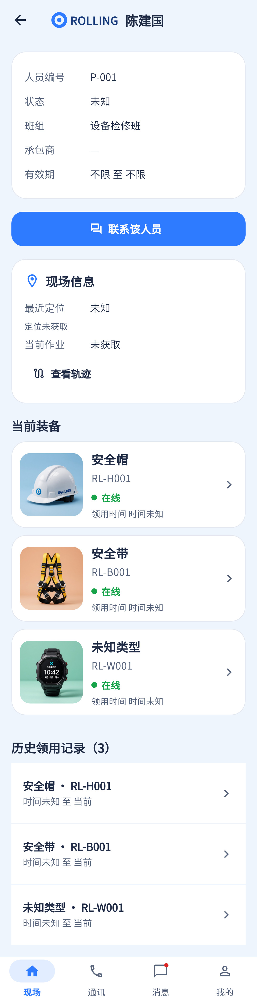

关联作业是明确缺口：当前固定显示“未获取”，不能以其他人员任务代替。
相同 · 已有基础
档案字段、当前装备、联系人员、轨迹、历史领用都存在。
不同 · UI与场景
当前标题直接用人名；资料与联系按钮靠前，设备卡大、历史全展开；设计是人物摘要、紧凑装备、关联作业卡和底部操作。
01 / 先看 UI
两图显示宽度统一；设计390px与当前360逻辑宽的画布不同。各图可独立滚动到底，点击“原图”放大。


使用既有组件截图；业务数据为示例。
02 / 逐项核对功能与小交互
入口：现场人员 → 人员；作业详情 → 成员 · 当前形态：子页面
| 编号 | 部位 | 设计要求 | 当前UI | 功能结论 | 下一步 |
|---|---|---|---|---|---|
| 08-01 | 档案 | 头像/姓名/编号/班组/有效状态 | 当前无参考头像摘要，字段卡存在 | 已有代码：people/:id | 统一摘要层级，保留未知状态 |
| 08-02 | 承包与有效期 | 承包商、起止有效期 | 字段已有，无值显示不限/占位 | 已有代码 | 核对空值是否确实代表不限，不能填参考日期 |
| 08-03 | 装备 | 帽带表缩略图、编号、状态、箭头 | 当前独立大图卡，滚动更长 | 已有代码：people/:id/equipment | 压缩图卡并保留全部装备而非只固定三件 |
| 08-04 | 设备详情 | 点击设备查看 | 已有 | 已有代码：deviceId跳转 | 返回应仍是原人员 |
| 08-05 | 关联作业 | 作业名称/状态/区域且可点 | 当前现场信息中固定“当前作业 未获取” | 缺失：未调用按人员查任务的接口 | 先补只读卡状态，再扩展按personId查询；不可取登录人的任务 |
| 08-06 | 联系人员 | 联系该人员 | 已有，位于资料后 | 已有代码：通讯personId | 保留未绑定设备时的说明 |
| 08-07 | 轨迹 | 查看该人员轨迹 | 已有，现场信息卡内 | 已有代码：tracks?personId | 确保ID而非姓名作为查询键 |
| 08-08 | 历史 | 历史领用按钮 | 当前历史列表直接展开 | 已有代码：assignments；可点设备 | 改入口/折叠或时间线，保留归还时间 |
| 08-09 | 现有定位 | 参考未单独展示经纬度 | 当前最近定位、质量、时间独立卡 | 已有代码：可选定位请求失败不阻断档案 | 作为增强保留，定位未知不可默认为正常 |
| 08-10 | 长页 | 到底后返回和底栏 | 当前可滚动且底栏存在 | 已有代码 | 按完整长页验收，不只首屏 |
源码依据
queries/people.dart:270,320,393,460,530
链接为随报告保存的带行号快照；行号对应分析时源码。以函数和字段共同定位，不能将请求代码视为执行成功证据。